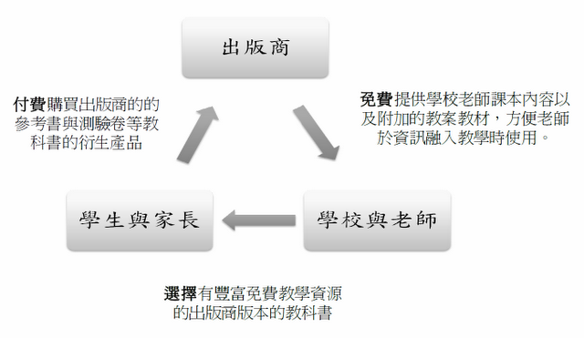

2011-04-11
本文篇幅較長，特分兩期刊登，本期為二之一。
壹、前言
因為在教育部全國創用CC諮詢中心工作之故，在推廣創用CC授權時，有機會接觸到第一線從事教學工作的中小學教師。老師常常向我們反應，是否書商提供的光碟輔助資源、 甚至是課本的內容與插圖也可以採用創用CC授權「姓名標示、非商業性、相同方式分享」。 這是因為製作資訊融入教學的教材教案時，老師常常會用到教科書或所附之參考資料內容，予以修改或者增加內容，但不清楚是否可以加以編修添補、 或者即使改作和引用後的教材教案，也不太敢放到公開的網路上，更遑論採用創用CC授權。
因此，為了要讓創用CC授權的教學資源可以產生正向循環，「教育部數位教學資源交換分享計畫」，邀請南一、瀚林、 康軒等九年一貫教科書出版社，討論產學合作的可行性，將教科書之數位內容如圖片與文字等、教學單位之教材素材、延伸學習之數位教材等內容，採用創用CC授權方式分享，而教育部數位教學資源入口網則提供專區與廣告讓教師社群知道某些出版社的資源係採用創用CC授權，更容易在製作資訊融入教學的教材教案時使用，助長廠商資源的能見度。
目前「教育部數位教學資源交換分享計畫」雖然已經舉辦過產學合作的會議，各出版社並不完全排斥採用創用CC授權，但仍都處於互相觀望的情況，短時間內似乎不太可能有所進展。就筆者所接觸的意見，有人認為這樣的結果，其實並不值得意外，因為教科書廠商根本不可能採用創用CC授權免費釋出他們的教學資源。我認為這樣的講法還有商榷之處，太快論斷公眾授權對教科書廠商而言這是不可行的商業模式。畢竟，在二十年前，恐怕沒有人會覺得同樣採用公眾授權的自由軟體是可行的商業模式，但是，今天，光是Linux作業系統的生態系相關的經濟營收就高達300億美元。因此，本文的目的主要是想要透過分析，回應類似的觀念。
貳、 免費是問題嗎？
有些人可能認為這樣的產學合作當然不可能成功，原因在於：出版社為什麼要把它的 辛苦製作的延伸學習之數位教材，「免費」地以創用CC「姓名標示-非商業性-相同方式分享」釋出？不過，必須指出的是，國內九年一貫教科書的出版社，向來就是「免費」贈送這些資源給老師，而且還有為數不少的業務人員主動向老師推銷這些資源。 學校如果採用出版社版本的教科書後，老師們都可以拿到該出版社免費而且內容豐富的數位教材光碟，甚至也可以登入出版社的網站（如翰林我的網），免費下載課本文字、 圖片、 學習單、 課本圖片的數位檔案。
會有這樣的情形，與國內九年一貫教科書出版社商業模式息息相關。書商的獲利不在於販售教科書（幾乎沒有利潤），而是來自在於教科書而衍生的參考書、測驗卷、題庫、補教產品等，不僅學校老師會跟出版社買來給學生練習、考試，家長與補習班也都會跟出版社購買。這些「衍生產品」的銷售成績，取決於有多少學校採用了該出版社版本的教科書，作為教學之用（如果我小孩讀的學校是用南一的版本，我有可能去買翰林的參考書嗎？）。而學校所以會選擇特定版本，一個重要的因素，即是出版社所提供的教學資源與附加的數位內容，是否方便老師教學使用，而這當然包括這些資源是否要收費。出版社若想向老師收取教學資源的授權費用，不僅收不到錢，學校也不會採用該版本的教科書，廠商也會喪失衍生產品的市場。換言之，免費提供這些教學素材給老師才是這些廠商最好的定價策略， 「免費」從來不是問題所在，反而是其商業模式的成功的關鍵。 國內教科書廠商的「免費」商業模式，其實可以以下圖表示：

參、創用CC授權可以提高原本免費提供的教案教材資源的價值
在這種商業模式下，採用創用CC「姓名標示-非商業性-相同方式分享」，反而會增加廠商提供的教學資源的易用性與價值。因為，目前廠商雖然免費提供這些教學資源給老師下載以及個人教學使用，但是，老師通常沒有取得改作的權利，也沒有獲得公開傳輸上傳到網站的授權，因此在使用上會造成一些困擾。老師可能花了相當多時間增補或修改特定教材，或者在自製的教材中運用到教科書廠商的資源，但最後可能都只能在課堂上私下使用，這連帶也會影響老師使用這些資源自編教材的意願，從而降低了該資源的易用性與價值。特別是，因為教育部近來的政策相當鼓勵老師自編的教材採用創用CC「姓名標示-非商業性-相同方式分享」授權，如果教科書廠商提供的資源也採用該授權條款，對老師來講相當方便。 我們可以發現，採用創用CC「姓名標示-非商業性-相同方式分享」授權的資源，與僅免費提供，但授權不清或相當有限的教學資源相比，前者對老師而言是更有價值的資源。
（未完待續）
本文為著作人接受中央研究院資訊科技創新研究中心台灣創用 CC 計畫「專題研究獎助計畫」的產出。本文內容不必然代表中央研究院資訊科技創新研究中心或台灣創用 CC 計畫的立場。本文的著作權利為著作人所有，且著作人（黃泰然）已同意採用創用 CC 「姓名標示」3.0 台灣版授權條款釋出。